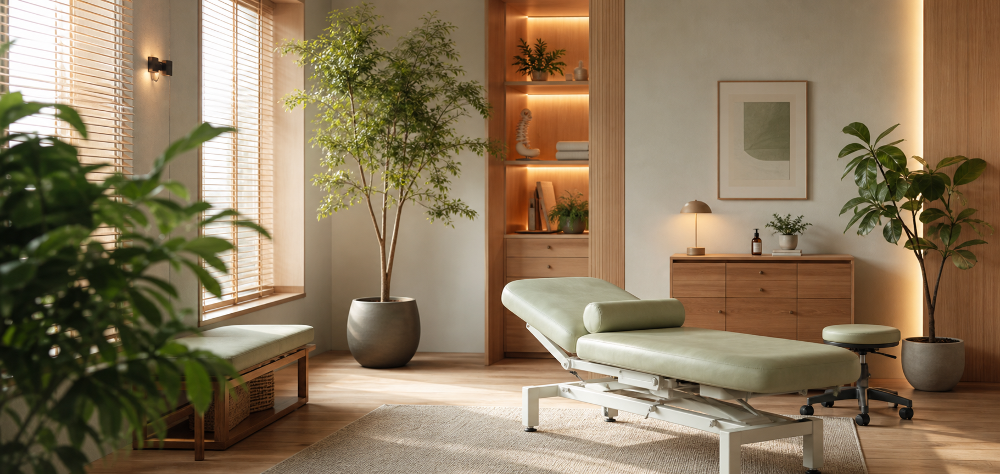

肩こり、腰痛、姿勢、疲労などから探せます。

受付から施術、会計までを事前に見せます。
初回来院前の不安を減らす構成です。
Symptom Guide
来院理由から探せるので、初めてでも迷わない。
治療院HPでは、院の説明より先に「自分の悩みに対応しているか」を見せることが重要です。
肩こり・首の重さ
デスクワークやスマホ姿勢による首肩の負担をケア。
初回 4,980円腰痛・姿勢改善
姿勢チェックと施術で、日常のつらさを減らす提案。
60分 / 4,980円慢性的な疲労感
睡眠、冷え、疲れやすさに悩む人のコンディションケア。
45分 / 3,980円First Visit Clarity
初回来院前に知りたいことを、料金表の先まで見せる。
整体・治療院では、施術内容だけでなく、服装、所要時間、通院目安、キャンセル方法まで分かると予約しやすくなります。
初回整体 60分
カウンセリング、姿勢チェック、施術、セルフケア提案までを一つの流れで表示。
4,980円 / 約60分服装・持ち物
動きやすい服装、着替えの有無、タオルなどを事前に案内できます。
手ぶらでも相談可通院目安
状態に合わせた来院ペースの目安を伝え、不安な勧誘感を減らします。
初回後に提案変更・キャンセル
予約変更の方法や受付時間を明記して、LINE予約へ進みやすくします。
前日まで変更可
Today Slots
16:00 初回整体
19:30 姿勢チェック
LINEで症状相談可
First Visit
受付から施術まで、初回の不安をなくす。
何をされるか分からない不安を減らすため、初回来院の流れを見える化します。
悩み、生活習慣、痛みの出る場面を確認。
体の状態を分かりやすく説明します。
施術後にセルフケアや次回目安を案内。
Reserve
相談から予約まで、スマホで迷わせない。
電話、LINE、予約フォームのどれにも差し替え可能。症状を選んでから予約へ進む導線を作れます。
Guest Voice
来院前の不安を減らす、短い口コミとFAQ。
悩み別入口で心理的ハードルを下げます。
施術前後の流れを見せます。
よくある質問で問い合わせ前の疑問を解消。
Use This Template
症状、料金、施術の流れを差し替えて、治療院HPとして公開できます。
整体、整骨院、鍼灸、リラクゼーション、姿勢改善サロンなどに合わせて調整できます。